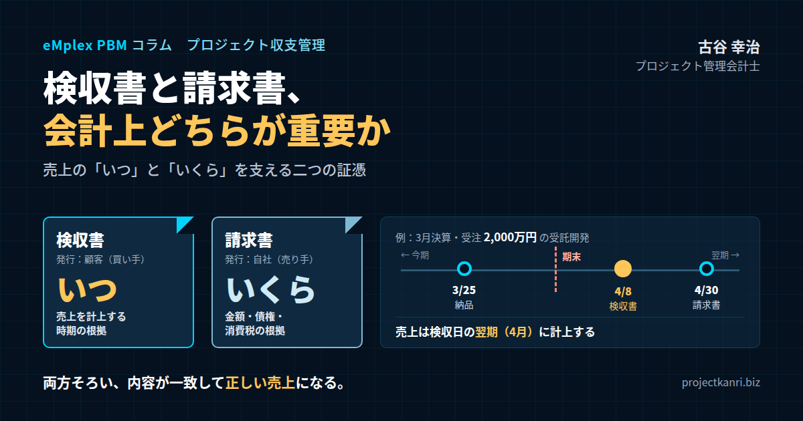

検収書と請求書、会計上どちらが重要か―売上の「いつ」と「いくら」を支える二つの証憑
結論：売上の「時期」を決めるのは検収書、「金額と債権」を裏付けるのは請求書
最初に結論を申し上げます。検収書と請求書のどちらが会計上重要か、という問いに対する私の答えは、「どちらか一方ではなく、果たしている役割が違う」というものです。そのうえで、プロジェクト型ビジネスにおいてあえて一つを挙げるなら、売上を「いつ」計上するのかを決める根拠になる検収書の方が、決算の正しさにとってより決定的な意味を持つことが多い、と申し上げます。一方、請求書は、売上の「金額」と、顧客に対する債権を裏付け、消費税の処理や代金の回収の根拠になる書類です。検収書が時期を、請求書が金額と債権を支える。この二つがそろい、内容が一致していて初めて、売上の数字は正しく、説明できるものになります。
先日、ある経営者の方から、こんな質問をいただきました。「うちの経理は、請求書を発行したら売上を立てている。検収書をわざわざもらう必要はあるのか」。同じような運用をしている会社は、実は少なくありません。請求書は自社で発行する書類なので、手元にあり、管理もしやすい。一方、検収書は顧客から受け取る書類で、顧客によっては発行の習慣がなく、催促しなければ届かないこともあります。そのため、請求書を売上の基準にしてしまう方が楽に見えるのです。
しかし、請求書の発行日を売上の日としてしまうと、思わぬところで数字がずれます。たとえば、顧客の締め日に合わせて請求書をまとめて発行している会社では、納品や検収が終わっていても、請求書を出すまで売上が立ちません。逆に、年間の保守料を前もって請求している場合には、まだサービスを提供していないのに、請求した時点で一年分の売上が立ってしまいます。どちらの場合も、売上の時期は実態とずれます。そして、そのずれが期末をまたげば、決算の数字そのものが誤っていることになるのです。
私自身、新卒で入社した朋友建設で、工事の出来高や引き渡しの時期をめぐって、どの期の売上として計上すべきかの判断が曖昧になっている場面を目にしてきました。工事が終わったのか、まだ終わっていないのか。発注者の確認は得られているのか。こうした判断の根拠が書類として整っていなければ、決算の数字は、担当者の判断ひとつで動いてしまいます。会社が和議という局面を迎える過程で、数字の根拠が曖昧であることの怖さを、身をもって知りました。
私はプロジェクト管理会計の専門家として、これまで200社を超えるプロジェクト型企業の経営管理を支援してきました。その中で、監査法人から最も多く指摘を受けていたのが、この売上の計上時期の問題でした。そして、その多くは、検収書と請求書の役割の違いが社内で整理されていないことから生まれていました。
私自身、エンプレックスでCFOを務めていた頃、上場企業グループの一員として、売上の計上の根拠を厳しく問われる立場にありました。受託開発の案件の売上は、顧客の検収をもって計上する。その根拠となる検収書が、期日どおりに、正しい日付で、すべての案件についてそろっていること。これが、決算の信頼性の土台でした。当時、プロジェクトの事務を担ってくれていたアドミニストレーターが、すべての案件の検収書を確実に回収し、請求書や売上の数字と照合してくれていたことが、どれほど心強かったか分かりません。
本稿では、検収書、納品書、受領書、請求書という、取引に関わる主な書類の違いを整理したうえで、売上の計上の時期と検収書の関係、請求書が担う役割、原価の側で立場が逆になる外注の取引、監査や税務調査で見られるポイント、検収書が届かない現場の実態と対策、そしてプロジェクト管理会計への組み込み方までを、実務の視点からお伝えします。
なお、本稿は会計と税務の一般的な考え方を整理したものです。実際の会計処理や税務上の取り扱いは、会社の状況や契約の内容によって異なりますので、監査人や顧問税理士にご確認ください。
検収書と請求書の違いは、経理の担当者だけが知っていればよい知識ではありません。検収書を回収するのは、多くの場合、プロジェクトマネージャーや営業の担当者です。請求書の発行のタイミングを顧客と調整するのも、現場の担当者です。現場の担当者が、二つの書類の役割の違いを理解していなければ、検収書の回収は後回しにされ、請求書の日付で売上が立ち、期ずれが生まれます。本稿は、経営者や経理の担当者だけでなく、現場の皆さんにも読んでいただきたい内容です。
本稿で扱う内容は、物品の販売よりも、システムの開発、ソフトウェアの制作、コンサルティング、広告や制作、建設といった、受注した成果物を一件ごとに納めるプロジェクト型のビジネスを主に想定しています。こうしたビジネスでは、納品から検収までに一定の期間がかかることが多く、検収書と請求書の役割の違いが、決算の数字に直接影響するからです。
検収書・納品書・受領書・請求書：四つの書類の違い
まず、取引に関わる主な書類の違いを整理しておきましょう。会計上どちらが重要かを考える前に、それぞれの書類が何を証明しているのかを理解しておくことが大切です。
納品書は、受注した側、つまり売り手が発行する書類です。発注された商品や成果物を、いつ、何を、どれだけ納めたのかを示します。納品の時点で発行され、商品名や数量、金額などが記載されます。納品書が証明しているのは、「売り手が納めた」という事実です。
受領書は、発注した側、つまり買い手が発行する書類です。商品や成果物を受け取ったことを示します。誰が、いつ、何を受け取ったのかを記載します。受領書が証明しているのは、「買い手が受け取った」という事実です。ただし、受け取っただけで、中身を確認したことまでは意味しません。
検収書は、発注した側、つまり買い手が発行する書類です。納められた商品や成果物について、数量や仕様、品質が発注どおりであることを確認し、受け入れたことを示します。受領書との違いは、中身を確認したうえで発行されることです。検収書が証明しているのは、「買い手が内容を確認し、受け入れた」という事実です。システムの開発やソフトウェアのように、受け取っただけでは内容を確認できない成果物では、一定の検収の期間を設けて動作を確認したうえで、検収書が発行されます。
請求書は、受注した側、つまり売り手が発行する書類です。納めた商品や成果物の対価を示し、支払いを求めます。請求の金額、支払いの期限、振込先などが記載されます。請求書が証明しているのは、「売り手が、この金額を、この期限までに支払うよう求めた」という事実です。
四つの書類を並べると、発行する人と、証明する事実が、それぞれ違うことが分かります。納品書と請求書は売り手が発行し、受領書と検収書は買い手が発行します。そして、売り手が自ら発行する書類は、売り手の側の行為を示すものであり、買い手が発行する書類は、買い手の側の確認を示すものです。
この違いは、会計の上で大きな意味を持ちます。売上を計上するということは、売り手が顧客に対する義務を果たし、対価を受け取る権利を得たことを、帳簿に記録することです。その義務を果たしたことを、最も客観的に示すのは何でしょうか。売り手が自分で発行する納品書や請求書ではなく、顧客が内容を確認して発行する検収書です。自分で「納めました」「請求します」と言うことと、相手が「確認して受け入れました」と言うことでは、証拠としての重みがまったく違うのです。
一方で、請求書には、検収書にはない役割があります。請求の金額、消費税の額、支払いの期限が明記されることで、顧客に対する債権の内容が確定します。また、消費税のインボイス制度のもとでは、買い手が仕入税額控除を受けるために、売り手が発行する適格請求書が必要になります。請求書は、取引の金額と税務を支える書類なのです。
なお、検収書の発行は、法律で義務づけられているわけではありません。そのため、検収書を発行する習慣のない会社もあります。しかし、取引の内容を双方で確認し、後のトラブルを防ぐために、検収書のやり取りは広く行われています。そして、発行され、受け取った検収書は、取引を証明する証憑として、一定の期間保存しておく必要があります。
四つの書類は、取引の流れの中で、次のような順番でやり取りされるのが一般的です。売り手が成果物を納め、納品書を添える。買い手が受け取り、必要に応じて受領書を返す。買い手が内容を確認し、検収書を発行する。売り手が検収書を受け取ってから、請求書を発行する。買い手が請求書に基づいて代金を支払う。この流れの中で、検収書は、納品と請求の間に位置し、取引が「完了した」ことを確定させる節目の役割を果たしています。
なお、取引によっては、納品書と請求書を一枚にまとめた書式や、検収書と受領書を兼ねた書式が使われることもあります。書式の名前よりも、その書類が何を証明しているのかが大切です。顧客が内容を確認して受け入れたことが日付とともに示されていれば、それは検収の証拠として機能します。逆に、名前が検収書であっても、日付や確認の印がなく、何を確認したのかが分からなければ、証拠としての力は弱くなります。
プロジェクト型のビジネスでは、もう一つ、作業報告書や完了報告書といった書類がやり取りされることもあります。準委任の契約のように、成果物の完成ではなく、一定の期間の作業そのものを提供する契約では、毎月の作業の時間や内容を報告書にまとめ、顧客の確認を受けたうえで請求することが一般的です。この場合、顧客が確認した作業報告書が、検収書と同じように、その月の売上の根拠になります。契約の形に応じて、何が売上の根拠になる書類なのかを、あらかじめ整理しておくことが大切です。
この取引の流れの中で、どこかの段階が抜けたり、順番が入れ替わったりすると、数字の誤りやトラブルが生まれます。検収書を受け取る前に請求書を発行すれば、検収の段階で指摘された修正や減額が請求に反映されず、請求書の訂正が必要になります。納品書を発行せずに作業を進めれば、何をいつ納めたのかの記録が残らず、検収の範囲をめぐって顧客と認識がずれることがあります。書類の流れを守ることは、取引そのものの品質を守ることでもあるのです。
会計の視点①：売上計上の時期を決めるのは検収書
売上をいつ計上するのか。これは、会計の上で最も重要な論点の一つです。売上の時期がずれれば、月次の損益も、期末の決算の数字も、実態からずれてしまいます。
売上を計上するタイミングの考え方として、伝統的には、出荷基準、納品基準、検収基準の三つが知られています。出荷基準は、商品を出荷した時点で売上を計上する方法です。納品基準は、商品が顧客に届いた時点で計上する方法です。そして検収基準は、顧客が内容を確認し、検収を終えた時点で計上する方法です。
物品を販売する会社では、出荷基準や納品基準が使われることも多くあります。しかし、システムの開発、ソフトウェアの制作、コンサルティングの成果物の納品といった、プロジェクト型のビジネスでは、検収基準が広く使われてきました。なぜなら、こうした成果物は、納品しただけでは、顧客が求めた内容を満たしているかどうかが分からないからです。システムを納品しても、顧客が動作を確認し、問題がないと判断するまでは、売り手は義務を果たしたとは言い切れません。顧客の検収をもって初めて、売り手の義務が果たされたと考えるのが自然なのです。
現在、上場企業などには、収益認識に関する会計基準が適用されています。この基準では、売り手が顧客との契約で約束した義務、つまり履行義務を果たした時点で、あるいは果たしていくにつれて、収益を認識します。成果物の引き渡しによって一時点で義務を果たす契約では、顧客が成果物を支配できるようになった時点が収益を認識する時点になり、その判断の目安の一つとして、顧客による検収が挙げられています。一定の期間にわたって義務を果たしていく契約では、進捗度に応じて収益を認識する方法もあります。どの方法が適切かは、契約の内容によって判断されます。いずれにしても、一時点で収益を認識する受託の案件では、検収書は、収益の認識の時点を示す最も重要な証拠になります。
中小企業では、従来の企業会計の考え方に基づいて会計処理を行うことも認められていますが、検収基準を採用している会社であれば、検収書が売上の時期の根拠になることに変わりはありません。また、法人税の上でも、収益は原則として引き渡しの日の属する事業年度に計上することとされており、請負の取引では、目的物を完成して引き渡した日が基準になるのが一般的です。検収の日は、この引き渡しの日を判断する重要な手がかりになります。
具体的な数字で考えてみましょう。三月決算の会社が、受託開発の案件を三月二十五日に顧客に納品したとします。受注の金額は二千万円です。顧客は検収の期間として二週間を設けており、動作の確認を経て、四月八日付けで検収書を発行しました。検収基準を採用しているこの会社では、この案件の売上は、三月ではなく、四月、つまり翌期に計上されます。三月に納品したからといって、三月の売上にしてしまえば、二千万円の売上が一期早く計上されることになります。
逆の場合もあります。検収書は三月二十八日付けで発行されていたのに、請求書を顧客の締め日に合わせて四月に発行し、請求書の日付で売上を計上していたとします。この場合、本来は今期の売上である二千万円が、翌期に計上されてしまいます。
このように、売上の計上の時期を誤ることを、期ずれと呼びます。期ずれは、会社全体の売上の合計を変えるわけではありませんが、期ごとの損益を大きく動かします。特に期末の月の期ずれは、決算の数字を直接誤らせるため、監査で最も注意深く確認される論点の一つです。
プロジェクト型の会社にとって、検収書の日付は、売上がどの期に属するのかを決める、極めて重要な情報なのです。だからこそ、検収書は、日付が明記され、顧客の確認の印や署名があり、内容が受注した案件と一致していることが求められます。
期ずれは、意図せずに起きることがほとんどです。担当者が、納品した月に売上を立てるものだと思い込んでいた。顧客の検収書の日付を確認せずに、届いた月に計上していた。請求書の発行の月を売上の月と考えていた。こうした小さな思い込みが、期末に大きな数字の誤りとなって表れます。だからこそ、売上の計上の基準を明文化し、全社で同じ基準を使うことが欠かせません。
検収書の日付の扱いについても、社内のルールを決めておくと安心です。顧客が検収を完了した日と、検収書を発行した日が異なる場合、どちらの日付を基準にするのか。検収書が郵送で届き、到着が遅れた場合、検収書に記載された日付と、到着した日のどちらを基準にするのか。私がお勧めしているのは、顧客が検収を完了したことが記録上で確認できる日、つまり検収書に記載された検収の完了の日を基準にすることです。到着の遅れによって売上の計上を遅らせる必要はありませんが、月次の締めの後に届いた検収書の扱いは、締めのルールの中で決めておく必要があります。
検収書が売上の時期の根拠になるということは、裏を返せば、検収書が回収できない限り、売上を計上できないということでもあります。プロジェクトマネージャーが「納品は終わったので今月の売上です」と報告しても、検収書がなければ、経理はその売上を計上できません。現場と経理の間で、この認識がずれていると、月末になって「計上できると思っていた売上が計上できない」という事態が起き、月次の業績の見通しが大きく狂います。現場の担当者に、検収書の回収までが自分の仕事だと理解してもらうことが、売上の見通しの精度を高める第一歩です。
会計の視点②：請求書が担う、金額・債権・消費税の役割
では、請求書は会計の上で重要ではないのでしょうか。もちろん、そうではありません。請求書には、検収書とは異なる、いくつもの重要な役割があります。
一つ目の役割は、売上の金額を確定させることです。受注の段階の金額と、最終的に請求する金額は、必ずしも同じではありません。仕様の変更による追加の作業、作業の範囲の縮小による減額、値引きなど、取引の途中で金額が変わることがあります。検収書に金額が記載されていない場合や、検収の後に金額の調整が行われる場合には、請求書が最終的な売上の金額を示す書類になります。
二つ目の役割は、顧客に対する債権、つまり売掛金の内容を明確にすることです。売上を計上すると、同時に、顧客から代金を受け取る権利である売掛金が帳簿に記録されます。請求書は、その売掛金の金額と、支払いの期限を顧客に示すものです。入金の管理、つまり、いつまでに、いくらが入金されるべきかを管理するうえで、請求書は欠かせません。期限を過ぎても入金がない場合には、請求書をもとに督促を行います。
三つ目の役割は、消費税の処理の根拠になることです。2023年10月から始まったインボイス制度のもとでは、買い手が仕入税額控除を受けるためには、原則として、売り手が発行する適格請求書を保存する必要があります。売り手の側から見れば、適格請求書発行事業者として登録し、必要な事項を記載した請求書を発行することが、顧客との取引を続けるうえでの前提になっています。請求書は、税務の面で、取引の当事者双方にとって重要な書類なのです。
ここで注意しなければならないのは、請求書の発行と、売上の計上は、必ずしも同じ時点ではないということです。
たとえば、年間の保守の契約で、一年分の保守料を前もって請求する場合を考えてみましょう。四月に一年分の保守料百二十万円を請求し、入金を受けたとします。しかし、四月の時点では、まだ一か月分のサービスしか提供していません。この場合、請求した百二十万円のうち、四月の売上として計上するのは十万円だけで、残りの百十万円は、前受金として負債に計上し、サービスを提供した月ごとに売上に振り替えていきます。請求書の日付で百二十万円の売上を立ててしまえば、売上が大幅に前倒しになってしまいます。
逆に、受託開発の案件で、検収の後に、顧客の支払いの都合で請求書の発行を遅らせる場合もあります。この場合、売上は検収の時点で計上し、請求書を発行するまでの間は、まだ請求していない売上の債権として管理します。
段階的に請求する契約もあります。着手の時に三割、中間で三割、検収の後に四割を請求するといった契約です。この場合、着手時や中間の請求は、前受金として受け取るものであり、それ自体は売上ではありません。売上の時期は、あくまで検収など、義務を果たした時点で判断します。
このように、請求書は「いくら」「いつまでに」「誰に」を示す書類であり、売上の「いつ」を示す書類ではありません。請求書の日付を売上の日付と同じものとして扱ってしまうことが、期ずれの大きな原因になっているのです。
まとめると、売上の計上では、検収書で時期を確認し、請求書で金額と債権を確認する。両者の内容、つまり案件、金額、日付の関係が整合していることを確かめる。この照合こそが、正しい売上の数字をつくる基本の手順です。
請求書の金額と、受注の金額との差にも注意を払ってください。両者に差がある場合、その差がどこから生まれたのかを説明できなければなりません。仕様変更による追加の作業なのか、作業の範囲の縮小なのか、値引きなのか。差の理由が記録されていれば、案件の採算の分析にも役立ちます。追加の作業が無償で行われていた場合には、請求書の金額は受注の金額のままでも、原価だけが増えていることになり、案件の採算は悪化しています。
売掛金の管理の面では、請求書の発行が遅れることのリスクも見逃せません。検収が終わっているのに請求書の発行が遅れれば、その分だけ入金が遅れ、資金繰りに影響します。売上は検収の時点で正しく計上しつつ、請求書は検収書の受け取りの後、できるだけ速やかに発行する。この二つを両立させることが、損益と資金の両方を健全に保つための基本です。
インボイス制度の導入によって、請求書の記載事項にも注意が必要になりました。登録番号、適用する税率ごとに区分した金額と消費税の額など、適格請求書として必要な事項が漏れていれば、顧客は仕入税額控除を受けられず、請求書の再発行を求められることになります。請求書の書式を、制度に沿ったものに整えておくことは、顧客との取引を円滑に保つための基本です。
請求書の発行の時期を顧客の締め日に合わせることは、実務上よく行われています。顧客の支払いの手続きの都合を考えれば、それ自体は合理的な運用です。問題は、その請求書の日付を売上の日付と同じものとして扱ってしまうことにあります。請求書の発行の時期は顧客の都合に合わせつつ、売上の計上は検収の時点で行う。この二つを切り離して考えることが、正しい売上の数字をつくる鍵です。
原価の側では立場が逆になる：外注費と検収・請求
ここまでは、自社が売り手の立場で、売上を計上する場合の話でした。プロジェクト型のビジネスでは、自社が買い手の立場になる取引も多くあります。協力会社への外注です。原価の側では、検収書と請求書の立場が逆になります。
外注の取引では、自社が協力会社に作業を発注し、協力会社が成果物を納め、自社がその内容を確認して検収します。そして、協力会社から請求書を受け取り、代金を支払います。つまり、検収書を発行するのは自社であり、請求書を発行するのは協力会社です。
では、外注費はいつ計上すべきでしょうか。基本的な考え方は、売上の場合と同じです。外注費は、協力会社の作業が完了し、自社がその成果物を受け入れた時点で、つまり自社が検収した時点で計上します。協力会社から請求書が届くのを待ってから計上するのではありません。
ところが、実務では、請求書が届いた時点で外注費を計上している会社が少なくありません。協力会社の請求書は、相手の締め日の都合で、作業の完了から一か月以上遅れて届くこともあります。請求書の到着を待って計上していると、外注費は実際の作業の完了の時期よりも遅れて計上されます。月次の損益は、作業が完了した月には原価が少なく、請求書が届いた月には原価が多くなり、案件の採算が月ごとに大きく揺れることになります。期末であれば、今期の原価が翌期にずれ込み、今期の利益が過大になってしまいます。
こうした期ずれを防ぐためには、自社が検収した時点で外注費を計上し、請求書が届いていない場合には、発注の金額や検収の内容に基づいて見積もりで計上しておくことが必要です。請求書が届いたら、見積もりで計上した金額と照合し、差があれば調整します。
外注費の計上と支払いの場面では、三つの書類の照合が基本になります。発注書、検収書、そして請求書です。発注書で、何を、いくらで依頼したのかを確認します。検収書で、依頼した作業が完了し、内容が確認されたことを確認します。請求書で、協力会社が請求している金額が、発注と検収の内容と一致しているかを確認します。この三つがそろい、金額が一致していることを確かめてから、支払いを行います。この三点の照合は、誤った支払いや、不正な支払いを防ぐための、内部統制の基本でもあります。
請求書は、外注の取引でも、消費税の処理に欠かせません。インボイス制度のもとでは、協力会社から受け取る適格請求書を保存しておかなければ、原則として仕入税額控除を受けることができません。協力会社の中に、適格請求書を発行できない免税事業者がいる場合には、経過措置の扱いも含めて、税務上の処理を確認しておく必要があります。
また、外注の取引では、法律の面での期限にも注意が必要です。資本金や従業員の数などの条件によっては、2026年1月から下請法を改正して施行された取適法、あるいは個人の事業者に委託する場合のフリーランス新法の対象となり、成果物を受け取った日から六十日以内の、できる限り短い期間内に支払期日を定めて代金を支払う必要があります。ここで起算点になるのは、請求書を受け取った日ではなく、成果物を受け取った日です。検収に時間をかけていても、その間も期限は進んでいきます。検収の手続きを速やかに行い、検収書を早めに発行することは、法令を守るためにも大切です。
このように、原価の側では、検収書は自社が発行するものであり、その日付が外注費の計上の時期の根拠になり、支払期限の管理にも関わります。請求書は協力会社が発行するものであり、支払いの金額と消費税の処理の根拠になります。ここでも、検収書と請求書は、それぞれ異なる役割を果たしているのです。
外注費の見積もりでの計上は、月次の締めのルールとして定着させることが大切です。月末の時点で、自社が検収を終えているのに協力会社の請求書が届いていない発注を一覧にし、発注の金額で外注費を計上する。翌月に請求書が届いたら、計上済みの金額と照合する。この運用を毎月繰り返せば、外注費の期ずれはほとんど起きなくなります。プロジェクトマネージャーには、協力会社の作業の完了を確認したら、速やかに社内で検収の手続きを行うよう、ルールとして求めておきます。
エンプレックスでCFOを務めていた頃、外注費の計上を、請求書の到着の基準から、自社の検収の基準に切り替えたことがあります。切り替えの前は、案件の月次の採算が、協力会社の請求書の届く時期によって大きく揺れ、経営会議で案件の状況を正しく判断できませんでした。切り替えた後は、作業が完了した月に原価が計上されるようになり、売上と原価の時期が揃って、案件の本当の採算が月次で見えるようになりました。
外注の取引では、検収の基準を、発注の段階で協力会社と共有しておくことも大切です。何をもって作業の完了とし、どのような確認を経て検収とするのか。この基準が曖昧だと、協力会社は作業を終えたつもりでいるのに、自社は検収を終えていない、という食い違いが生まれます。その結果、協力会社との間で支払いの時期をめぐるトラブルになったり、法律で定められた支払期限を守れなくなったりするおそれがあります。
取適法の対象となる取引では、支払期日の定め方だけでなく、手形による支払いの禁止や、価格の協議に応じない一方的な代金の決定の禁止など、2026年の改正で新たに加わったルールもあります。外注の取引が多いプロジェクト型の会社では、自社の取引がこうしたルールの対象になるのかを、顧問弁護士とあわせて確認しておくことをお勧めします。
監査と税務調査で見られるポイント
検収書と請求書の役割の違いが、最もはっきりと問われるのが、監査と税務調査の場面です。
監査では、売上が正しい期に計上されているかどうかが、重要な確認の対象になります。特に、期末の前後の取引です。期末の直前に計上された売上について、本当に今期中に検収が終わっていたのか。期末の直後に計上された売上の中に、本来は今期に計上すべきものが含まれていないか。監査人は、こうした取引について、売上の計上の根拠となった書類を確認します。プロジェクト型の会社であれば、その中心になるのが検収書です。
監査人が検収書を確認する際に見ているのは、主に次のような点です。検収書の日付が、売上を計上した日と一致しているか、あるいは同じ期の中にあるか。検収書が、顧客の側で正式に発行されたものであり、顧客の確認の印や署名、担当者の名前があるか。検収書に記載された案件や成果物、金額が、受注の内容や請求書と一致しているか。期末の直前に、通常よりも多くの検収が集中していないか。
最後の点は、特に注意が必要です。期末に売上の目標を達成するために、顧客に検収を急いでもらったり、実際にはまだ作業が残っているのに検収書を発行してもらったりすることは、売上の前倒しの計上として、厳しく問題視されます。検収書の日付が期末に集中している場合、監査人は、その検収が実態を伴っているかどうかを、より詳しく確認することになります。
検収書がない売上も、監査で指摘を受けやすい項目です。顧客が検収書を発行してくれなかったために、請求書や社内の記録だけを根拠に売上を計上している案件があれば、監査人は、その売上が本当にその期に属するのかを確認するために、別の証拠を求めます。顧客とのメールのやり取りや、成果物の受け入れを示す記録などです。こうした代わりの証拠も残っていなければ、売上の計上の時期を説明できず、修正を求められることもあります。
税務調査でも、売上の計上の時期は重要な確認の対象です。法人税の上で、収益をどの事業年度に計上すべきかは、課税の所得に直接影響します。翌期に計上すべき売上を今期に計上していれば、今期の所得が過大になり、逆に、今期に計上すべき売上を翌期に計上していれば、今期の所得が過少になります。後者の場合は、申告の漏れとして指摘を受けることになります。
税務調査では、検収書や請求書の保存の状況も確認されます。法人の場合、取引に関する書類は、原則として、事業年度の確定申告書の提出期限の翌日から七年間、欠損金の繰り越しがある事業年度については十年間、保存することが求められています。検収書も請求書も、取引を証明する証憑として、この保存の対象になります。
また、電子帳簿保存法により、電子メールやクラウドのサービスで受け取った請求書や検収書などの電子取引のデータは、一定の要件を満たして電子のまま保存することが求められています。紙に印刷して保存するだけでは、要件を満たさない場合があります。検収書や請求書をPDFなどで受け取ることが増えている今、その保存の方法も、あらためて確認しておく必要があります。
監査や税務調査に強い会社とは、売上の一件一件について、いつ、何を根拠に計上したのかを、すぐに説明できる会社です。その説明の中心になるのが、検収書です。そして、検収書と請求書と受注の記録が、案件ごとにそろい、内容が一致している状態をつくることが、監査や税務調査への最善の備えになります。
監査で検収書を確認されることに備えて、日頃から整えておくべきことがあります。それは、案件ごとに、受注の書類、検収書、請求書が、一つの場所にまとまって保存されていることです。監査人から特定の案件の売上の根拠を求められたとき、その案件のファイルを開けば、すべての書類が時系列でそろっている。そうした状態を作っておけば、監査への対応は格段に速くなり、監査人からの信頼も高まります。
内部統制の観点からは、売上の計上の手続きの中で、誰が検収書を確認し、誰が売上の計上を承認したのかを、記録として残しておくことも大切です。検収書の内容を確認する担当者と、売上を計上する担当者を分けておく。期末の前後の売上については、上長が検収書と計上の日付を確認する。こうした手続きが日々の業務の中で運用され、その記録が残っていることが、監査において内部統制が有効に機能していることの証拠になります。
私がCFOとして監査法人と向き合っていた頃、期末の監査で最も時間をかけて確認されたのが、期末の前後の売上の計上の時期でした。案件ごとに、検収書の日付と売上の計上の日付を一つずつ照合していく作業です。当時は、プロジェクトの事務を担うアドミニストレーターが、すべての案件の検収書を整理して保存してくれていたため、監査人からの求めにすぐに応じることができました。検収書が整っていることが、監査をどれほど円滑にするかを実感した経験です。
検収書が届かない・遅れる現場の実態と、その対策
検収書が売上の時期の根拠として重要であることは分かっていても、現場では、検収書がなかなか届かない、という悩みがつきものです。実態と対策を整理しておきます。
一つ目の実態は、顧客に検収書を発行する習慣がないことです。検収書の発行は法律で義務づけられているわけではないため、特に中小規模の顧客や、取引の経験の少ない顧客では、検収書の書式そのものを持っていないことがあります。この場合の対策は、自社で検収書のひな形を用意し、顧客に記入と押印、または署名をお願いする方法です。案件名、成果物、検収の日、金額、検収の担当者の名前と確認の印や署名の欄を設けた一枚の書式を、案件の契約の段階で顧客に示しておきます。電子的な方法であれば、顧客の担当者から、検収を完了した旨と日付を記載したメールを受け取り、それを検収の記録として保存する方法もあります。いずれの方法を取るかは、契約の段階で顧客と取り決めておくことが大切です。
二つ目の実態は、検収の手続きが長引くことです。顧客の側で、検収の担当者が忙しい、社内の承認の手続きに時間がかかる、といった理由で、納品から検収書の発行までに何週間もかかることがあります。期末をまたいで長引けば、売上は翌期にずれ込みます。対策としては、契約の段階で、検収の期間を明確に定めておくことが有効です。たとえば、納品から十営業日以内に検収を行い、その期間内に不具合の指摘がない場合には検収が完了したものとみなす、といった取り決めです。いわゆるみなし検収の条項です。ただし、みなし検収の条項があっても、会計上の収益の認識の時点は実態に基づいて判断されますので、運用については監査人と確認しておくことをお勧めします。
三つ目の実態は、検収の範囲があいまいなことです。成果物の一部について検収が終わっているのに、残りの部分の修正が続いているために、全体の検収書が発行されない。あるいは、検収の後に追加の修正を求められ、それを開発の案件の延長として扱うのか、保守の契約の中で扱うのかがはっきりしない。こうした場合の対策は、契約の段階で、検収の単位と範囲を明確にしておくことです。成果物を段階に分け、段階ごとに検収と請求を行う契約にすれば、一部の遅れが全体の売上の計上を遅らせることを防げます。また、検収の後に生じた不具合を、一定の期間は無償で修正し、それ以降は有償の保守や改修として扱う、といった線引きを決めておけば、開発の案件の完了と保守への移行を、数字の上でもはっきりと区切ることができます。
四つ目の実態は、社内で検収書の回収が後回しにされることです。プロジェクトマネージャーや営業の担当者は、顧客への対応や次の案件に追われ、検収書の回収を忘れてしまうことがあります。納品は終わっているのに、検収書が回収されていないために売上が計上されない案件が、月末になって見つかる。こうした事態を防ぐには、検収の予定の日を案件ごとに管理し、予定の日が近づいたら担当者に回収を促す仕組みが必要です。以前のコラムでご紹介したスーパーアドミニストレーターのように、検収書の回収を専門に担う人がいる会社では、この問題はほとんど起きません。
五つ目の実態は、検収書の内容と請求書の内容が一致しないことです。検収書に記載された成果物の範囲と、請求書に記載された金額が合っていない。仕様の変更で金額が変わったのに、検収書には当初の金額が記載されている。こうした不一致は、売上の金額の誤りや、顧客とのトラブルの原因になります。対策は、検収書を受け取った時点で、受注の内容、仕様変更の記録、請求の予定の金額と照合し、不一致があれば請求書を発行する前に顧客と確認することです。検収書を受け取ってから請求書を発行するという順番を守ることで、請求の金額の誤りを防ぐことができます。
検収書の回収を確実にするためには、顧客との関係の中で、検収の意味を伝えておくことも大切です。顧客の担当者にとって、検収書の発行は、社内の手続きの一つにすぎないかもしれません。しかし、検収書が届かなければ、売り手は売上を計上できず、請求書も発行できません。その結果、顧客の側の支払いの手続きも遅れます。検収書を期日までに発行していただくことが、双方の事務を円滑にすることにつながると、契約の段階で丁寧に伝えておけば、顧客の協力も得やすくなります。
検収書の回収の状況は、月次の会議でも確認することをお勧めします。納品済みで検収書が未回収の案件の一覧、その案件ごとの納品からの経過日数、回収の見込み。こうした情報を毎月共有すれば、回収が滞っている案件に早めに手を打つことができます。納品から長期間にわたって検収書が回収できていない案件は、顧客との間で何らかの問題が生じている兆候かもしれません。検収書の回収の遅れは、案件のリスクを知らせる信号でもあるのです。
検収の手続きは、顧客の業種や規模によっても異なります。大企業の顧客では、社内の検収の手続きが厳格に定められており、検収書の様式も決まっていることが多い一方、承認に時間がかかる傾向があります。中小規模の顧客では、手続きは簡素でも、検収書を発行する習慣そのものがないことがあります。顧客ごとの検収の手続きの特徴を把握し、案件の計画の段階から、検収にかかる期間を見込んでおくことが大切です。
プロジェクト管理会計への組み込み：検収予定は、売上予定そのもの
ここまでの内容を、プロジェクト管理会計の仕組みにどう組み込むかを考えてみましょう。
プロジェクト型の会社にとって、案件ごとの検収の予定は、そのまま売上の予定です。検収基準で売上を計上している会社であれば、今月にどの案件の検収が予定されているかが分かれば、今月の売上の見通しが分かります。来月、再来月の検収の予定を並べれば、先の数か月の売上の見通しになります。
そこで、案件ごとに、次のような日付を管理することをお勧めします。納品の予定日と実績の日、検収の予定日と実績の日、請求の予定日と実績の日、入金の予定日と実績の日。この四つの予定と実績を並べて管理すれば、案件がどの段階にあるのかが一目で分かります。納品は終わっているのに検収が終わっていない案件、検収は終わっているのに請求していない案件、請求したのに入金がない案件。それぞれの段階で止まっている案件を、すぐに見つけることができます。
特に重要なのは、検収の予定日です。検収の予定日が月末の締めの日に近い案件は、少しの遅れで翌月にずれ込みます。期末の月であれば、翌期にずれ込みます。月次の締めの数日前に、その月に検収を予定している案件の一覧を確認し、予定どおりに検収書が回収できそうかを、担当者に確認します。遅れそうな案件があれば、顧客との調整を急ぐか、売上の見通しを翌月に修正します。以前のコラム「月次締めの引き継ぎストレスを仕組みで消すプロジェクト収支管理」でご紹介した、締めの日の五営業日前に今月の検収の対象を洗い出す運用は、まさにこのためのものです。
検収の実績の日が記録されたら、その日付で売上を計上します。請求の日付ではありません。この原則を、経理の担当者だけでなく、プロジェクトマネージャーや営業の担当者にも理解してもらうことが大切です。検収書の回収が遅れれば、売上の計上が遅れ、案件の採算の数字も遅れることを、現場が実感していれば、回収は自然と早まります。
原価の側でも、同じように管理します。協力会社への発注ごとに、作業の完了の予定日と、自社の検収の日、協力会社からの請求書の受領の日、支払いの日を管理します。自社の検収の日で外注費を計上し、請求書が未着の場合は見積もりで計上しておきます。支払いの期限は、成果物を受け取った日から計算して管理します。
こうして、売上の側では顧客の検収の日、原価の側では自社の検収の日を基準に、案件ごとの売上と原価を同じ時期に対応させて計上できれば、案件の月次の採算は、実態に近い数字になります。売上だけが先に立って利益が大きく見える月、原価だけが先に立って赤字に見える月、といった揺れが減り、案件の本当の採算が見えるようになるのです。
検収の予定と実績の差を記録しておくことも有益です。検収の予定日から実績の日までの遅れが大きい顧客や、遅れが繰り返し起きる種類の案件があれば、契約の条件や、案件の進め方を見直すきっかけになります。検収の遅れは、売上の計上の遅れであると同時に、資金の回収の遅れでもあります。検収の管理を通じて、資金繰りの見通しの精度も高めることができるのです。
検収の予定の精度を高めるためには、プロジェクトマネージャーが案件の進み具合を踏まえて、検収の予定日を毎月見直すことが欠かせません。受注の時点で立てた検収の予定日を、そのまま放置していると、作業の遅れや顧客の都合による延期が反映されず、売上の見通しは実態から離れていきます。月次の締めのたびに、各案件の検収の予定日を更新し、その変化の理由を記録しておくことで、売上の見通しは常に最新の状態に保たれます。
ホリプロで経営企画を担当していた頃にも、作品や公演ごとの収入の計上の時期をめぐって、取引先からの確認の書類がいつ届くのかが、月次の数字の確定を左右する場面がありました。業種は違っても、相手の確認をもって取引が完了するビジネスでは、その確認の書類をいつ受け取るのかを管理することが、数字の正しさとスピードの両方を決めるのだと感じました。
検収の予定と実績の管理は、営業の活動にも生かせます。検収が終わった案件の顧客は、成果物の価値を最も実感している時期にあります。検収の完了を確認したタイミングで、運用や保守の提案、次の改修の提案を行えば、次の受注につながりやすくなります。検収の管理は、経理のための管理であると同時に、顧客との関係を次につなげるための管理でもあるのです。
これらの日付を管理する仕組みは、表計算のファイルでも始められます。案件ごとに一行を設け、納品、検収、請求、入金のそれぞれの予定と実績の日付の列を並べておくだけでも、案件の状況は大きく見えやすくなります。以前のコラム「エクセルで始めるプロジェクト管理会計」でお伝えしたように、まずはデータの持ち方とルールを決めることが大切です。案件の数が増えて表計算での管理が難しくなったら、システムへの移行を検討すればよいのです。
まとめ：検収書は「いつ」、請求書は「いくら」。両方そろって初めて正しい売上になる
検収書と請求書は、会計の上で、どちらが重要か。本稿でお伝えしてきた答えは、どちらか一方ではなく、それぞれが異なる役割を果たしている、というものです。
検収書は、顧客が内容を確認し、成果物を受け入れたことを示す書類です。プロジェクト型のビジネスでは、売上をいつ計上するのか、つまり売上の時期の根拠になります。売り手が自ら発行する書類ではなく、顧客が発行する書類であるからこそ、売り手が義務を果たしたことの客観的な証拠として、監査や税務調査で重視されます。
請求書は、売上の金額と、顧客に対する債権の内容を確定させ、代金の回収と消費税の処理の根拠になる書類です。ただし、請求書の発行の日は、売上の計上の日と必ずしも同じではありません。前受けの請求や、段階的な請求、検収の後の請求など、請求の時期と売上の時期がずれる場面は多くあります。
原価の側では立場が逆になり、自社が発行する検収書が外注費の計上の時期と支払期限の起算点の根拠に、協力会社が発行する請求書が支払いの金額と仕入税額控除の根拠になります。発注書、検収書、請求書の三点の照合が、正しい原価の計上と、適正な支払いの基本です。
そして、検収書と請求書は、案件ごとに、受注の記録とともにそろい、内容が一致していることが大切です。検収書で時期を、請求書で金額を確認し、両者の整合を確かめる。この基本の手順を、月次の締めの仕組みに組み込み、案件ごとの検収の予定を売上の予定として管理することが、正しい売上の数字と、精度の高い見通しをつくる土台になります。
ここで、よくいただく質問にお答えしておきます。
「顧客が検収書を出してくれない場合、どうすればよいか」という質問です。自社で検収書のひな形を用意して顧客に記入をお願いする、検収の完了を記載したメールを受け取って保存する、といった方法があります。契約の段階で、検収の方法と期間を取り決めておくことが最も確実です。
「請求書の日付で売上を計上するのは誤りか」という質問もよくいただきます。請求書の発行の時期が、検収や引き渡しの時期と常に一致しているのであれば、結果として大きな問題は生じないかもしれません。しかし、両者がずれる取引がある場合には、期ずれの原因になります。売上の計上の基準を検収や引き渡しの時点に置き、請求書は金額の確認に使う、という役割の分担をお勧めします。
もう一つ、「検収書と請求書の金額が違う場合は、どちらを正とすべきか」という質問もいただきます。まずは、両者の差がなぜ生まれたのかを確認することが先決です。仕様の変更や値引きなど、正当な理由があれば、その内容を顧客と確認し、最終的に合意した金額を売上とします。理由が分からない場合には、請求書を発行する前に、必ず顧客と確認してください。誤った金額で請求すれば、後で訂正の手続きが必要になり、顧客との信頼にも影響します。
私たちが提供している「eMplex PBM」は、案件ごとの予算・実績・着地見込みを管理し、売上の計上の予定の月を案件ごとに管理して、月ごとの売上の見通しに積み上げることができるサービスです。検収の予定を売上の予定として管理し、月次の締めの前に、どの案件の検収が予定されているのかを確認する運用に役立てていただけます。
eMplex PBMでは、案件ごとの売上の計上の予定と実績を管理でき、月次の締めの前に、その月に計上を予定している案件と、まだ計上されていない案件を確認することができます。検収書の回収の状況と売上の計上の状況を、案件ごとに同じ画面で追いかけられるため、期ずれの防止と、月次の売上の見通しの精度の向上に役立ちます。
まずは、自社の売上の計上の基準が、検収なのか、請求なのか、納品なのかを確認してみてください。そして、直近の期末の前後に計上された売上について、検収書の日付と計上の日付が一致しているかを、いくつかの案件で確かめてみてください。その確認が、自社の売上の数字の正しさを点検する、最初の一歩になります。
検収書は「いつ」を、請求書は「いくら」を語る書類です。その両方がそろい、互いに矛盾しないとき、売上の数字は初めて、誰に対しても自信を持って説明できるものになります。一枚の書類の日付と金額に、会社の決算の正しさがかかっている。そのことを、経営者から現場の担当者まで、全員が理解している会社こそが、信頼される数字をつくり続けることができるのだと、私は考えています。